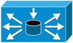
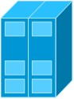
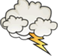

连线
|
连线 |
|
折线(横向) |
|
折线(纵向) |
|
二次折线(横向) |
|
二次折线(纵向) |
|
曲线 |
虚拟网络设备
|
交换机 |
|
路由器 |
|
VM路由控制器 |
|
防火墙 |
|

负载均衡 |
虚拟主机
|
虚拟主机 |
|
客户机 |
|
服务器 |
|
Web服务器 |
|
邮件服务器 |
|
文件服务器 |
物理网络设备
|

物理主机 |
|
物理交换机 |
|
物理防火墙 |
|
物理路由器 |
位置图形
|

云 |
|
房屋 |
其他信息:
比如结合highcharts放一些节点联动的图表信息